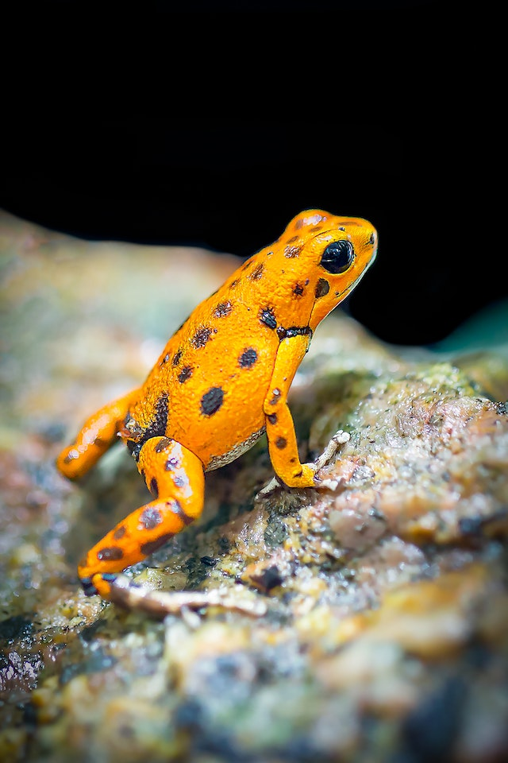
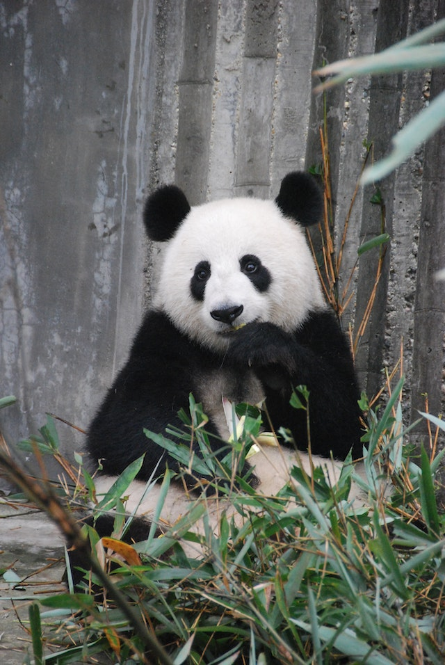

The lion (Panthera leo) is a large cat of the genus Panthera native to Africa and India. It has a muscular, broad-chested body; short, rounded head; round ears; and a hairy tuft at the end of its tail. It is sexually dimorphic; adult male lions are larger than females and have a prominent mane. It is a social species, forming groups called prides.

A frog is any member of a diverse and largely carnivorous group of short-bodied, tailless amphibians composing the order Anura[1] (ανοὐρά, literally without tail in Ancient Greek). The oldest fossil "proto-frog" Triadobatrachus is known from the Early Triassic of Madagascar, but molecular clock dating suggests their split from other amphibians may extend further back to the Permian, 265 million years ago. Frogs are widely distributed, ranging from the tropics to subarctic regions, but the greatest concentration of species diversity is in tropical rainforest.

The giant panda (Ailuropoda melanoleuca, sometimes panda bear or simply panda), is a bear species endemic to China.[4] It is characterised by its bold black-and-white coat and rotund body. The name "giant panda" is sometimes used to distinguish it from the red panda, a neighboring musteloid.
Squirrels are members of the family Sciuridae, a family that includes small or medium-size rodents. The squirrel family includes tree squirrels, ground squirrels (including chipmunks and prairie dogs, among others), and flying squirrels. Squirrels are indigenous to the Americas, Eurasia, and Africa, and were introduced by humans to Australia.